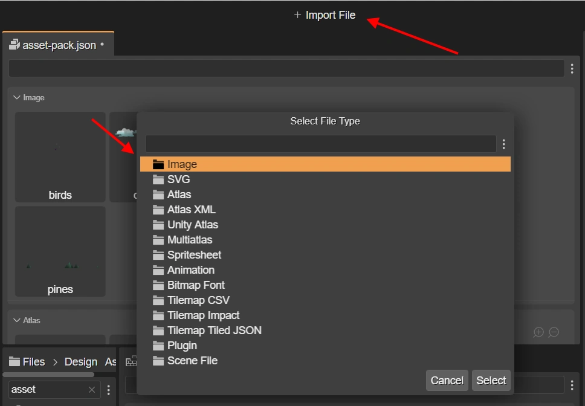
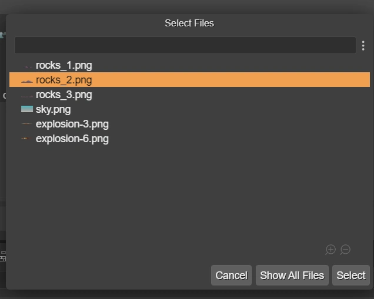
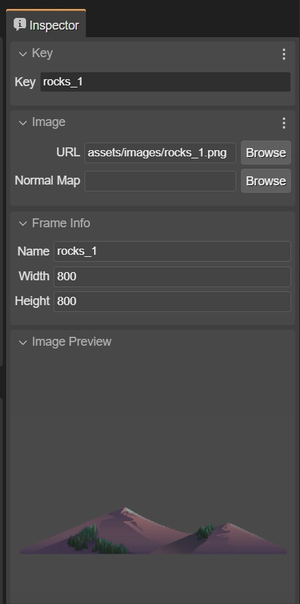

Importing using the Main toolbar
These are the steps:
With the Asset Pack Editor active, press the Import File button in the Main toolbar (also available in the context menu or by pressing the
Akey.)It opens a dialog with all the file types. Select the type of file you want to add.

When you select a file type, it opens a dialog with a list of candidate files to be added. The candidate files are selected following these rules:
The files belong to the folder, or sub-folder, of the editor input file. It is not a restriction of the Asset Pack file, but we use it to simplify the process of importing the files.
The content type or extension of the file names are compatible with the type selected. For example, if you select to add an Image, then only image files are shown.
The files are not included in any other Asset Pack file in the project.
However, you always have the option of select any file by pressing the Show All Files button of the dialog.

Change the properties of the file configuration in the Inspector view. Many of the values of the fields are set automatically. The file URL is computed using its relative path in the project. Read Setting the root folder for the asset files to learn more about the asset file URLs.
